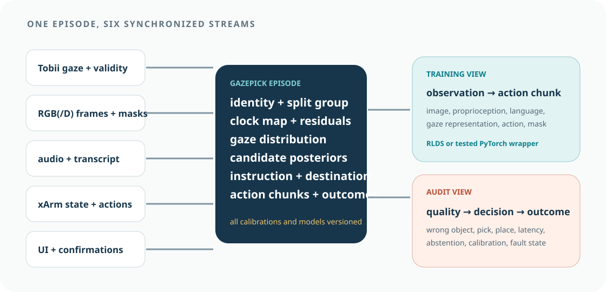
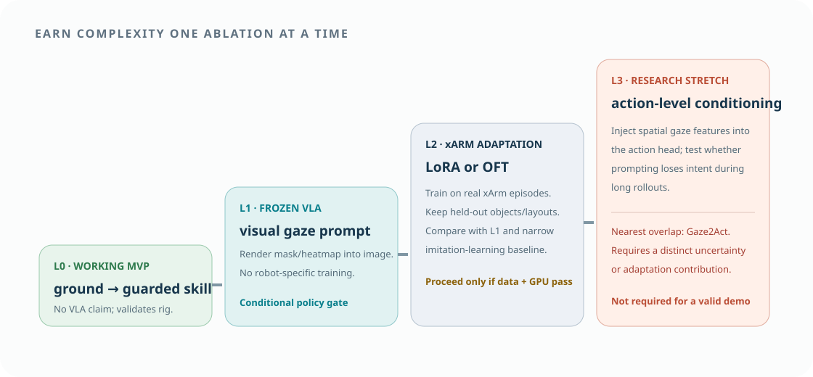

20–40 episodes
Clicked targets, scripted skills, fixed layout. Validate clocks, image/action alignment, gripper labels, guard events, and replay. Exclude from final evaluation.
Episodes, mathematics, and model strategy
A GazePick episode joins human reference, scene perception, robot state, action, and outcome on one clock. The same episode supports classical grounding, frozen VLA prompting, parameter-efficient xArm adaptation, and later failure analysis.

01 · Dataset contract
The unit of data is a complete attempted instruction, including abstentions and failures. Do not store only successful action clips; the research question depends on ambiguous and rejected cases.
| Table / stream | Minimum fields | Granularity | Quality fields |
|---|---|---|---|
episodes | episode, session, user, scene, instruction, intended source/destination, condition, seed, split group | one row per attempt | complete/excluded + reason |
gaze | device/host/common time, per-eye and combined coordinates, mapped image coordinates | device sample | validity, calibration, render rectangle |
audio | waveform reference, transcript, token/phrase times | clip/token | ASR confidence, correction status |
camera | frame ID, source/common time, RGB(/D), calibration, render ID | frame | age, drops, exposure |
candidates | object ID/class/attributes, polygon/mask, pose, destination flag | frame/keyframe | detector score, annotation/model version |
referent | gaze mass, language score, posterior, entropy, margin, decision/reason | candidate/episode | fusion version |
robot_state | joint, TCP, gripper, mode, state, error | controller sample | sequence gap, source time |
actions | proposed/executed action or skill, phase, confirmation, guard result | chunk/event | policy and guard version |
outcomes | referent, pick, transport, place, end-to-end, times, clarification, intervention | event/episode | rater, evidence, adjudication |
02 · Demonstration collection
The team should not collect hundreds of trajectories before checking calibration, action convention, balance, and replay. Early data is for debugging; later frozen data is for training and held-out evaluation.
Clicked targets, scripted skills, fixed layout. Validate clocks, image/action alignment, gripper labels, guard events, and replay. Exclude from final evaluation.
Multiple source families, positions, orientations, destinations, utterance variants, and valid gaze patterns. Include recoveries and failed mechanics; freeze a data manifest.
New layouts, object instances, and users. Never use evaluation outcomes to tune thresholds, prompts, adapters, or checkpoints.
| Axis | Training coverage | Held-out test | Why |
|---|---|---|---|
| source identity | several instances per family | new instance or family | visual generalization |
| layout | random positions in training zones | reserved zones/configurations | avoid memorized coordinates |
| utterance | deictic + explicit attribute forms | new paraphrases/speakers | language robustness |
| destination | both bins, counterbalanced | swapped positions | avoid fixed-motion shortcut |
| gaze quality | normal variation + marked invalid | edge/boundary and moderate noise | calibrated abstention |
| user | training demonstrators | unseen operators | personal gaze-pattern transfer |
03 · Grounding specification
The reference model should remain simple enough to audit. It can later be replaced by a learned fusion model, but the probabilistic baseline must survive as an ablation.
\(\omega_i=q_i\exp(-|t_i-t_r|/\lambda)\) combines sample validity \(q_i\) and distance from the referring event \(t_r\). Report sensitivity to the window and \(\lambda\).
Compute gaze mass numerically on the mask or by summing a normalized heatmap. Language evidence may begin as a deterministic attribute match; do not require a large model for a bounded command grammar.
Fit or tune \(\alpha,\beta\) only on training/validation users. Candidate priors \(b_j\) should normally be equal; positional priors can create misleadingly high performance in repeated layouts.
where \(\bot\) is abstention. Evaluate risk–coverage curves rather than presenting one favorable threshold.
04 · Adaptation ladder
The ladder protects the schedule and the research claim. Each level must work and be evaluated before the next becomes necessary.

| Level | Trainable element | Gaze representation | Robot output | Exit criterion |
|---|---|---|---|---|
| L0 | none | candidate posterior | scripted pick/place skill | safe end-to-end MVP + replay |
| L1 | none | rendered contour or heatmap in image | frozen VLA proposal | beats language-only or exposes limitation |
| L2 | LoRA/OFT adapter | same prompt, optional feature token | xArm-specific action/skill | held-out gain over L1 |
| L3 | gaze conditioning branch | spatial features at action head | action chunks | distinct benefit under long/dynamic intent |
05 · Fine-tuning plan
Robot-specific adaptation must align observation views, action conventions, control frequency, and normalization. A training loss decreasing on misaligned data is not progress.
Choose absolute pose, end-effector delta, joint delta, or high-level skill; define frame, units, gripper convention, frequency, horizon \(H\), and action normalization statistics from training data only.
Convert episodes to RLDS for the most tested OpenVLA route, or implement a PyTorch dataset with snapshot tests that recover known frame–instruction–action tuples.
Overfit a tiny subset, decode actions, and replay them without hardware. Failure here usually means data/action mismatch, not insufficient scale.
Log data manifest, base checkpoint, adapter rank, seed, augmentations, normalization, steps, GPU, memory, validation split, and checkpoint hash.
Choose one checkpoint using validation referent/task metrics and safety-aware offline rollout checks. Lock it before physical held-out evaluation.
Benchmark end-to-end latency, action rate, stale-output handling, and deterministic rollback. Start in shadow mode, then low-speed click-oracle trials, then gaze trials.
If a learned referent head is added, use a weighted auxiliary loss rather than claiming implicit grounding:
06 · Leakage-safe splits
Randomly splitting frames from the same rollout lets the model see nearly identical images in train and test. Group entire episodes, scenes, object instances, and users according to the generalization claim.
All frames and retries from one attempted instruction stay in one split.
Reserved layouts test whether the policy memorized coordinates or backgrounds.
Reserved instances or families test appearance transfer; state exactly which.
Unseen operators test gaze and speech transfer. Calibration samples do not count as task training.
07 · Quality gates
Every session produces a machine-readable quality report. Exclusion rules are set before model comparison.
| Gate | Measure | Decision | Failure action |
|---|---|---|---|
| gaze calibration | validation error distribution at feed-relevant points | threshold from object size/separation | recalibrate; exclude if persistent |
| tracking | valid-sample ratio and longest gap in reference window | minimum ratio / maximum gap | abstain; mark episode |
| mapping | known-marker screen-to-image error | pixel error relative to object spacing | fix UI transform; do not compensate in model |
| synchronization | offset/drift residual and tail latency | small relative to reference window | disable online use / exclude causal timing |
| camera | frame age, drops, exposure, blur | task-specific limits | pause collection |
| robot | state/action completeness, error, gripper outcome | phase reconstructable | diagnostic only |
| label | source/destination ground truth and outcome evidence | independently auditable | adjudicate or exclude |
Data precedent
DROID and Open X-Embodiment demonstrate scalable episode collection and cross-robot standardization. They do not remove the need for action-space and embodiment adaptation on the actual xArm.
The collaboration brought many robot datasets into a shared format. Its scale demonstrates why standardized observations and actions matter, while its diversity also makes embodiment mismatch impossible to ignore.

Shared structure makes pooled training possible, but a label such as end-effector action can still differ in frame, scale, rate, and gripper convention. GazePick therefore needs an explicit xArm action contract.
Large-scale in-the-wild manipulation data highlights consistent hardware, rich metadata, diverse scenes, and explicit collection infrastructure.

Camera variation matters for policy transfer. GazePick should initially freeze the operator feed, then test reserved viewpoints deliberately rather than through accidental camera movement.
08 · Privacy, license, and release
Gaze traces, voice, and video may be personal or identifiable behavioral data. SDK access, research analysis, publication, and public redistribution require separate decisions.
Do not capture faces. Record voice only if needed; consider storing verified transcripts and restricted audio separately.
Keep participant IDs separate from consent/contact records. Never encode names in filenames or Git history.
Separate raw gaze/audio/video, internal derived episodes, and a public export with aggregates or de-identified features.
Distinguish participation, internal analysis, media use, and public-data release. Document withdrawal boundaries.